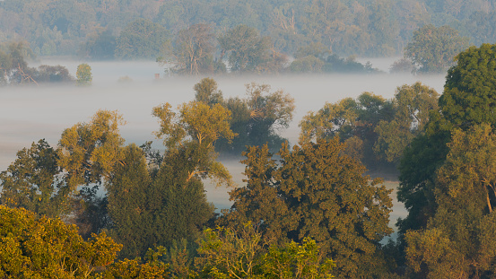

Die mittlere Brücke
Das Schloss von Berat
Butrint die antike Stadt
Sehenswürdigkeiten in Albanien
Sehenswürdigkeiten in Albanien
In Albanien sind es viele Sehenswürdigkeiten wie z.B. :
Die mittlere Brücke
Das Schloss von Berat
Butrint die antike Stadt